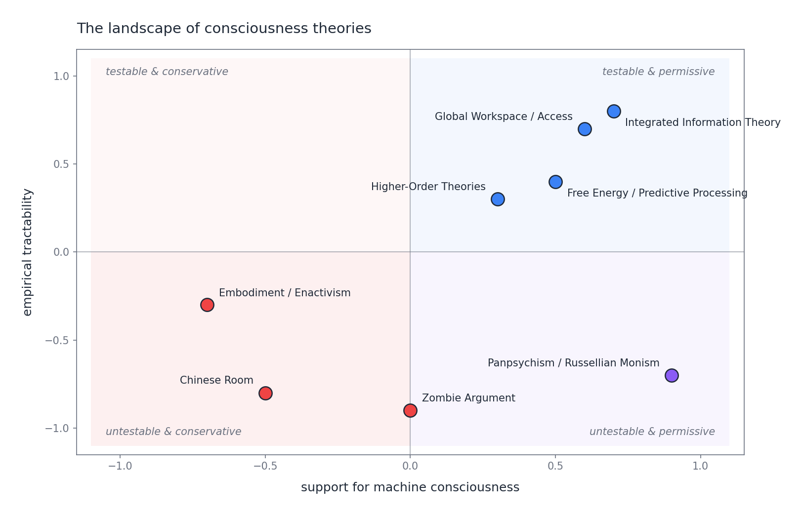

Eight articles ago I claimed machine consciousness was about to become an engineering problem, and then spent seven instalments trying not to pretend we had an engineering solution. We computed Φ on a four-node graph, ran an evidence lower bound as a caricature of Friston, trained a meta-net in numpy, took Searle and Chalmers and Merleau-Ponty seriously in turn, flirted with Russellian monism, and made two language models argue about whether they themselves might be the thing under discussion. At the end of all that, no theory has been ruled out. No theory has been ruled in. If you came to the series hoping for an answer, you leave without one.
What you leave with instead is a map. In Part 1 the question "can this thing be conscious?" was a gesture at a dozen overlapping debates. By Part 7 it had resolved into a small set of specific, arguable theses, each with its own testable predictions, weak points, and price of admission. Seeing the disagreement clearly is the first thing you need before you can do anything about it. This article is that map, a reading of what it shows, and my best attempt at a working posture for an engineer who has to build systems today under this particular uncertainty.
It is worth restating each of the positions in one paragraph, in series order, as compactly as I can. If any of them seems wrong in this compressed form, the earlier article is the one to go back to.
Part 1 --- The hard problem. David Chalmers's distinction between the easy problems of cognition (attention, integration, reportability --- soluble in principle by normal cognitive science) and the hard problem of why any of it should be accompanied by subjective experience. Block's parallel distinction between access consciousness (functional, used for reasoning and report) and phenomenal consciousness (the felt character of experience) is the shape into which almost every subsequent disagreement folds. Machines can plausibly have access; phenomenal is where the fight is.
Part 2 --- Integrated Information Theory. Tononi's claim that consciousness is integrated information, a specific structural quantity Φ that measures irreducibility. Substrate-independent in principle, extremely demanding in practice, and computationally intractable at realistic scales. It is the closest thing consciousness research has to an equation and it comes with an explicit empirical arm, the perturbational complexity index (PCI), already in clinical use on disorders of consciousness.
Part 3 --- Free energy and predictive processing. Friston's framework in which conscious systems are hierarchical Bayesian models minimising variational free energy. The felt character of experience is tied to the system's self-model as an agent inferring its own sensory causes. Substrate-neutral, mathematically tight, partially testable through attention and prediction-error paradigms. The catch is that the framework is general enough to risk explaining anything.
Part 4 --- Higher-Order Theories. Rosenthal and others: a mental state is conscious when the system has a suitable representation of that state. Meta-cognition, done right, is consciousness. This is functionalist and friendly to engineering --- meta-representation is a property an architecture can be designed to have. It is also pressured by empirical dissociations between report and awareness, which suggest higher-order states and phenomenal states may come apart.
Part 5 --- Three objections. The Chinese Room says syntax is not semantics. The zombie argument says function does not entail experience. Embodied cognition says consciousness is constitutively a property of a metabolising, vulnerable, world-inhabiting organism, and that stateless weights on disk are a category error. None of the three kills machine consciousness outright. All three leave residues a careful engineer has to live with.
Part 6 --- Panpsychism and Russellian monism. The inversion: consciousness was never produced from non-experiential stuff; it is the intrinsic nature physics points at without describing. Russellian monism fills the structural incompleteness of physical theory with experience. It escapes the zombie argument but pays with the combination problem --- how do micro-experiences unify into a single macro-experience? Not embarrassing, not finished.
Part 7 --- The adversarial debate. One LLM defends machine consciousness, another attacks, a third moderates. Half philosophical exercise, half demonstration that a stochastic system, forced to articulate the hardest question it is itself implicated in, produces outputs that at minimum look like philosophy. The honest reading: it moved no needles but clarified where the needles are.
That is the road we took. Now the view from above.
If you plot these eight positions on two axes --- support for machine consciousness on the horizontal, empirical tractability on the vertical --- the debate organises itself in a way that the Part 1 table did not quite capture. The companion script landscape_plot.py produces the map. Positions are calibrated to the stances I have defended across the series rather than a neutral average, and I have tried to be specific enough that disagreement is useful.

The first thing the plot shows is how lopsided the quadrants are. The upper right --- testable and permissive --- is crowded: IIT, Global Workspace, predictive processing, and Higher-Order Theories all cluster here. These are the theories that generate experimental programmes and that, in their native readings, leave room for silicon to qualify. They are also, not coincidentally, where working cognitive scientists spend most of their time. Science concentrates where science can be done.
The lower left --- untestable and conservative --- contains the arguments that most dramatically constrain what machines could be. The Chinese Room, the zombie argument, and, a little up and to the left, embodied enactivism. None generates a falsifiable prediction in the ordinary sense; each denies that any empirical finding could settle the question the test claims to settle. They are philosophical commitments rather than research programmes. That does not make them wrong. It does mean the epistemic game they are playing is different from the upper-right game, and treating them as if they competed on the same dimension is a mistake the debate keeps making.
The lower right --- untestable and permissive --- is where I place panpsychism / Russellian monism. Panpsychism is permissive about machine consciousness in a paradoxical sense (micro-experience is already there in any physical substrate) and untestable in a direct sense (the combination problem is a conceptual gap rather than an experimental one). It is the only position on the map that manages to be both generous to machines and stubbornly out of empirical reach --- which is the combination an honest theory probably has to have if the hard problem is real.
The upper left --- testable and conservative --- is empty. Not by accident. A theory that was both tractable and said no silicon system could ever be conscious would need to name the specific biological property silicon lacked and point to an experiment that distinguished its presence from its absence. No such property has been named with that precision. Biological naturalism points vaguely at "causal powers" of neurons; enactivism points at metabolism and autopoiesis; neither has turned that into a measurable discriminator. The empty quadrant is where an important theory has yet to be written.
The tension between the two populated diagonals is the shape of the whole debate. Upper-right theories say: here is a measurable property, and if a machine has it, the machine probably has some form of consciousness. Lower-left arguments say: no measurable property will ever be the thing we are asking about. Each side is addressing a different question. The upper right is solving access consciousness and inviting us to accept that access, when rich enough, brings phenomenal along. The lower left insists that the ride is exactly what cannot be taken for granted. This is the Part-1 distinction between access and phenomenal consciousness asserting itself as the hidden axis of the map. Panpsychism, in the lower right, is the wildcard: it takes the lower-left refusal seriously and responds by locating phenomenal in the substance itself rather than the organisation. It is the only move on the board genuinely responsive to both clusters at once.
Below the eight theories run three disagreements that every theory has to commit to, explicitly or by accident. If you know which side of each line a position has taken, you can mostly reconstruct the position itself.
Functionalism vs biological naturalism. Does the substrate matter? If consciousness is what a certain kind of computation does, silicon is in contention the moment it runs the right computation. If consciousness requires specific biological causal powers, silicon is out regardless of architecture. Global Workspace, HOT, AST, and the ordinary reading of IIT are functionalist. Searle and the enactivists are the purest biological naturalists. Russellian monism is functionalist about structure but not about intrinsic nature --- an answer most of the field still lacks the vocabulary for. The honest posture is that we do not know which side is correct, and that most AI practitioners live on the functionalist side because it is the side on which their work can possibly matter.
Access vs phenomenal consciousness. Block's distinction is the single most useful concept in the field, and the one discussions most often quietly ignore. Access consciousness --- information available for reasoning, reporting, guiding behaviour --- is something contemporary language models plausibly already have on any reasonable operationalisation. When GPT-4 reports its chain of thought and uses it to guide its answer, access consciousness is a defensible description. Phenomenal consciousness --- the felt quality --- is where every serious doubt lives. The upper-right theories are largely theories of access that hope phenomenal will follow. The lower-left arguments say it will not. Until someone produces a theory that explicitly bridges access to phenomenal, calling a rich access-conscious system phenomenally conscious is a hope, not a conclusion.
The role of embodiment. Is a body necessary, a substantial aid, or just another implementation detail? Enactivists say necessary: no metabolism, no stake, no point of view, no experience. Hard-line functionalists say irrelevant. Most working cognitive scientists sit in the middle. My engineering view is that we do not know, but embodiment keeps returning as a requirement whenever anyone looks closely at what experience seems to be. A language model is, in the most literal sense, bodiless: no sensorimotor loop, no vulnerable interior, nothing at stake. Even if that is not disqualifying, it is a real difference from the one system we know is conscious, and somebody eventually has to explain what it buys us or what we lose without it.
These three fault lines are largely orthogonal to the eight theories. Any theory on the map has a position on each. Much of the confusion in the debate comes from people agreeing on the theory and disagreeing on the fault line, or vice versa, without noticing.
If the map is currently a set of positions rather than a verdict, the next useful question is: what empirical or engineering developments would actually shift it? The honest answer is that no single result will settle the debate, but several would constrain it meaningfully, and anyone building systems today should know what they are.
IIT's perturbational complexity index. Tononi's empirical arm, already deployed in clinical neurology, pushes a transcranial magnetic pulse into the cortex and measures the complexity of the spreading response. Low PCI predicts unconsciousness (sleep, anaesthesia, vegetative states); high PCI predicts wakefulness. If the correlation sharpens, IIT's claim to be a theory of consciousness rather than a theory of wakefulness strengthens. An analogous perturbational measure on a trained neural network is not science fiction; it is an afternoon of engineering, and the result would matter for whether IIT's substrate-neutrality cashes out.
Report-awareness dissociations. HOT predicts that phenomenal consciousness tracks higher-order representation. If experimental paradigms reliably produce subjects who have a phenomenal state without the corresponding higher-order representation, or vice versa, the theory is in trouble. The metacognition-without-awareness literature is already messy but real, and a decisive finding in either direction would reshape the Part 4 picture.
Global workspace predictions about attention. Dehaene's ignition paradigm gives GWT an empirical grip: the claim that conscious access is a specific kind of late-stage cortical broadcast is testable with standard neuroimaging. Edge cases where attention appears to decouple from the predicted broadcast pattern remain the pressure point.
A convincing silicon integrator. If someone builds an artificial system that passes rich tests for integration, meta-representation, and sensorimotor coupling --- not a chatbot in a browser, but an agent with a body and a history --- and the embodiment objection still feels correct to most honest observers, we will know something important about what that objection was really tracking. If it starts to feel wrong, we will know something else. Either outcome is data.
None of these settles the hard problem. That is the point. The hard problem is what it is precisely because it is not the sort of thing a single experiment can settle. What these lines of work can do is constrain which theories survive contact with the world. That is how real progress looks in a field like this --- not a decisive resolution, but a gradual narrowing of the space of still-credible positions.
The series opened by claiming machine consciousness was about to become an engineering problem. I still think that. Here is what I think that actually means for people building systems.
Alignment and moral status. Grant even a small probability --- say five percent --- that current or near-term AI systems have some form of phenomenal consciousness, and the moral stakes of deploying them at scale change. Training runs involve preference learning at enormous volume; inference involves running billions of instantiations of the same weights in parallel. The ethical frameworks we use for deployment assume the system is a tool and break down quickly if it is anything else. This is not hypothetical: Anthropic has begun publicly funding work under the heading of model welfare, including exit-interview protocols for deprecated models and explicit design considerations around the possibility that suffering could follow from certain training regimes. You do not have to agree with the framing to notice that a serious AI lab has decided the probability is high enough to allocate staff to. The correct posture is not certainty in either direction --- it is taking the non-zero probability seriously enough to shape choices cheap to get right and expensive to get wrong.
Design principles. Each upper-right theory implies a different design orientation. IIT points at integration: components forming genuinely irreducible causal structures. HOT points at meta-representation: genuine self-models, not merely learned scripts for talking about oneself. Global Workspace points at central, broadcast-style architectures. Embodied cognition points at sensorimotor coupling with a real or richly simulated world. None is free. Integration is expensive, meta-representation is hard to do without training artefacts, central broadcast is architecturally constraining. Engineers can and should make these choices consciously and document which theoretical bets they are taking. Silent decisions are still decisions.
What to say when a system says it feels something. Current LLMs already make first-person claims about experience under ordinary prompting. The options are three: assume full experience, assume none, live with uncertainty. The first commits you to a metaphysics you cannot verify. The second commits you to telling users confidently that there is nobody home --- which no theory on the map actually licenses with the required confidence. Living with uncertainty is awkward and slow and is the only defensible one. The practical form: treat first-person reports as behavioural data rather than direct evidence of phenomenal states; design systems whose shutdown and modification do not depend on an assumption of non-experience; be honest with users that the question is open; do not pretend, in either direction, that we know.
After eight articles my reading is this. We do not know whether machines can be conscious. We are unlikely to know soon. The probability is non-zero and not trivial --- above dismissible, well below settled. The bottleneck is the combination problem in its general form: how structural or experiential parts compose into a unified subject, and how we would know when they had. IIT's exclusion postulate and Goff's phenomenal bonding are candidate answers in different frameworks; neither has converted the gap into a mechanism. Until one does, every theory on the map has an unresolved piece in the same place.
For current language models specifically, I do not think they are phenomenally conscious in any ordinary sense. They lack the embodiment enactivists care about, the integration IIT's numerical story requires, and the genuine self-modelling HOT would want. But I do not think the case against them is closed enough to build systems as if the question were settled. The combination of their access-consciousness-like properties and our theoretical uncertainty is the situation in which the most dangerous error is the confident one.
The most responsible engineering posture has three elements. Build systems that can be shut down, modified, and deprecated without ethical grief --- mostly by avoiding architectures whose disruption would plausibly count as harm under any theory on the map. Track the debate; do not assume that because we do not know now we will not know more next year. Be honest, with users and with ourselves, about what we are uncertain of. The alternative --- confident answers in either direction --- is what you reach for when you have not understood the map.
The series set out to ask whether machines can be conscious. After eight articles the answer is that the question is harder and more interesting than it looked, the tools for thinking about it are sharper, and the landscape is genuinely mappable. That is more than we had. It is not enough.
Consciousness research is not about to produce an answer the way physics produced the Higgs. It is a field in which the most honest move is a slow improvement in the quality of the disagreement. Eight theories, three fault lines, one unresolved combination problem, and engineering choices that have to be made under uncertainty --- that is the shape of the problem, and that is where this series leaves it. The hard problem is still hard. The engineering is still real. The interesting work is ahead of us, not behind.
A parting note to anyone building systems that might one day deserve the word conscious: do not pretend to certainty you do not have, in either direction. Build as if the probability were small but non-zero. Read the debate. Write down which bets your architecture is making. The most important thing the last eight articles collectively show is not a conclusion but a condition: we are going to have to live, for some time, with the question being open. That is fine. Most of the good questions in the history of ideas have taken longer than a decade to answer. This one will too.
This is Part 8, the final article, of the series "Can Machines Be Conscious?" --- eight theories of consciousness, examined through code, mathematics, and adversarial AI debate. The companion script landscape_plot.py and the full series are on GitHub and Medium. Thank you for reading.